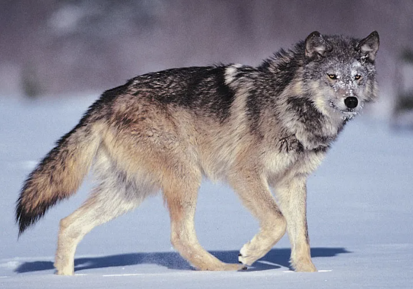

Wolves (Canis lupus) are apex predators whose intricate social structures and ecological influence shape entire wilderness systems. Far beyond simple pack instincts, wolf social dynamics rely on sophisticated emotional bonds, continuous vocal and visual communication, and established hierarchies. As keystone species, their presence regulates prey populations, prevents overgrazing of sensitive riverbanks, and creates vital ecological cascades that benefit hundreds of other plant and animal species.

Communication within a pack is nuanced and subtle, preventing unnecessary conflict among members. Through posturing, facial expressions, and vocalizations, wolves maintain order and convey intentions across long distances. Pups are raised collectively by the entire group, fostering strong cooperative habits that define pack survival.
Wolf Behaviors & Pack Dynamics:
Using endurance, strategy, and sheer numbers, wolves can successfully hunt prey species weighing up to ten times their individual body weight, such as moose, bison, and elk. Rather than relying on brute force, wolf packs leverage terrain, wind direction, and endurance running to isolate vulnerable individuals from a herd, minimizing injury risks to pack members.
A single wolf pack's home range can span anywhere from 50 to over 1,000 square miles depending on prey density and geography. They continuously patrol these expansive territories, marking boundaries and avoiding direct clashes with neighboring packs whenever possible to conserve energy and avoid injury.

Explore these reputable wildlife and scientific resources to dive deeper into wolf conservation, ecology, and ongoing reintroduction programs across North America and worldwide.